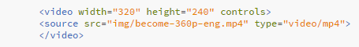
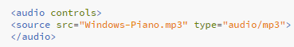
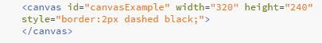

Lesson 10 - HTML5 Tags - Video, Audio, and Canvas
Video
You can embed video directly into your HTML without using a plug-in by using the <video> tag. You can specify the size of the video viewport using width and height properties. Adding control to your video tag will give the user controls to start, stop and pause the video. Instead of controls, you can also set the video to autoplay and the video will start when the page loads. There are three supported file types: MP4, WebM, and Ogg. If you specify more than one source the browser will play the first supported source.
Example
Become | Source: LDS.org
Audio
You can embed sound directly into your webpage without having to use a plug in. This is done by using the <audio> tag. Including "controls" will give the user controls to play pause and stop the audio. Only MP3, Wav, and Ogg are supported file types.
Example
Canvas
Canvas is used to draw graphics on a webpage using JavaScript. You can add canvas to your page using the<canvas> tag. The canvas is basically a container to hold the graphics drawn by the javascript code. By default canvas has no border or content. Be sure to include id, height and width properties. For our example I will also add a border property so we can see the defined canvas area.
Example
Sources: w3schools.com | lds.org | AudioSoundclips.com